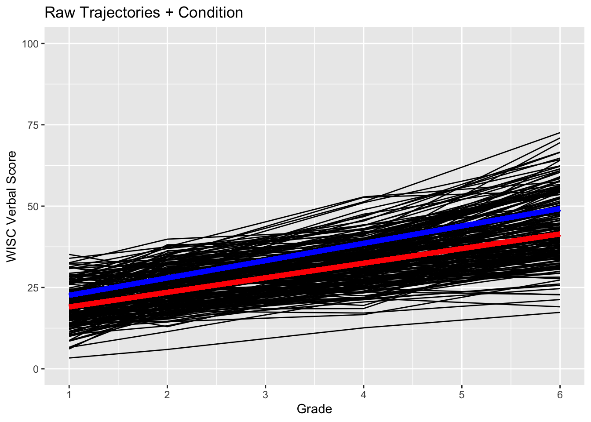
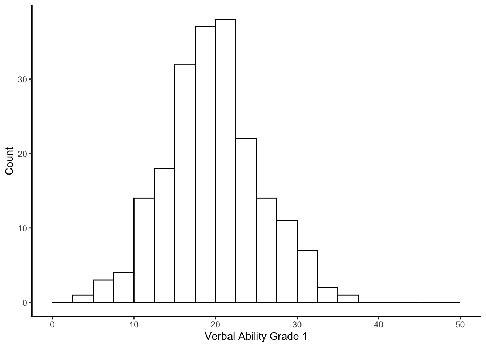
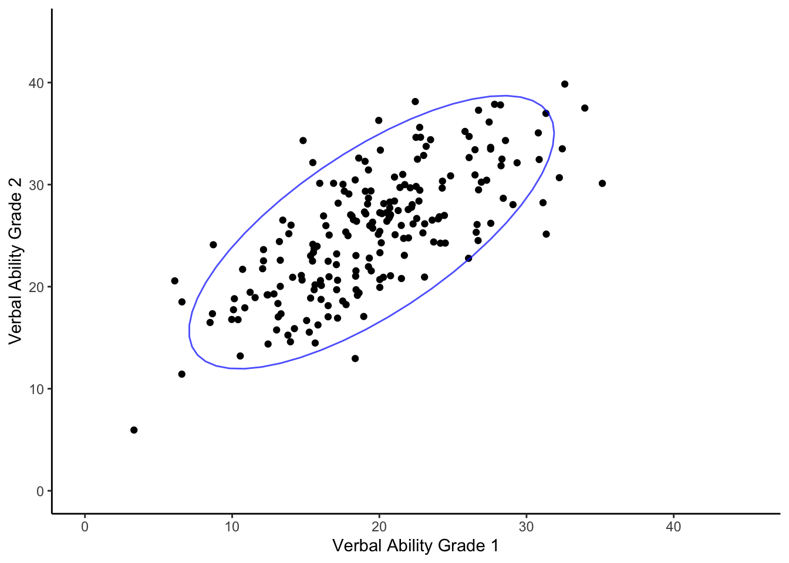
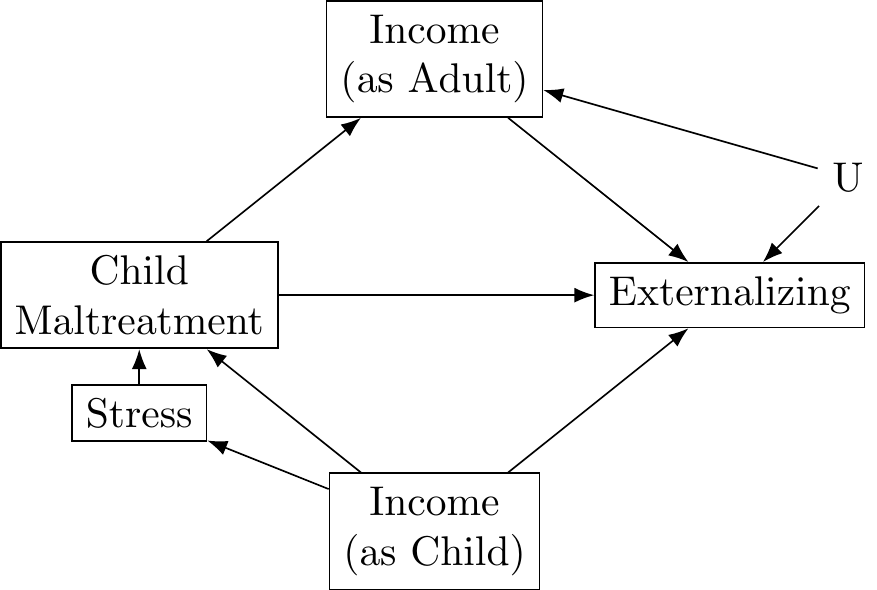
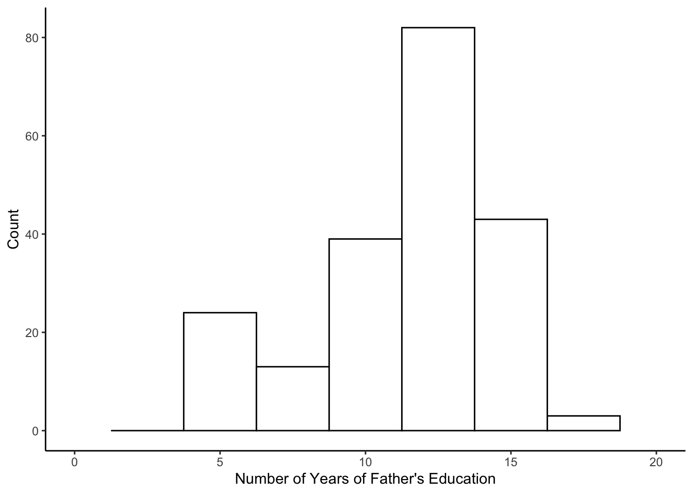

5.6 Multiple Regression in R
For the first example, we focus on verbal ability at Grade 2 as an outcome (verb2 in the data frame wiscsub). Examining the distribution for ‘verb2.’
psych::describe(wiscsub$verb2)## vars n mean sd median trimmed mad min max range skew kurtosis se
## X1 1 204 25.42 6.11 25.98 25.4 6.57 5.95 39.85 33.9 -0.06 -0.34 0.43ggplot(data=wiscsub, aes(x=verb2)) +
geom_histogram(binwidth=2.5, fill="white", color="black", boundary=0) +
xlab("Verbal Ability Grade 2") + ylab("Count") +
xlim(0,50) +
theme_classic()
5.6.1 Intercept-Only Model
The simplest model is an intercept only model. In this case, we would fit the model
\[ verb_{2i} = b_0 + \epsilon_{i}\]
Written out explicitly with the “silent” 1 in it, we get
\[ verb_{2i} = b_01_i + \epsilon_{i}\]
This is helpful for explicit translation into the R code, specifically the formula within the lm() function.
We fit the model using the following code. Note that the code has the ‘1’ predictor variable stated explicitly.
model1 <- lm(formula = verb2 ~ 1,
data = wiscsub,
na.action = na.exclude)
summary(model1)##
## Call:
## lm(formula = verb2 ~ 1, data = wiscsub, na.action = na.exclude)
##
## Residuals:
## Min 1Q Median 3Q Max
## -19.4653 -4.6403 0.5647 4.2822 14.4347
##
## Coefficients:
## Estimate Std. Error t value Pr(>|t|)
## (Intercept) 25.4153 0.4275 59.45 <2e-16 ***
## ---
## Signif. codes: 0 '***' 0.001 '**' 0.01 '*' 0.05 '.' 0.1 ' ' 1
##
## Residual standard error: 6.106 on 203 degrees of freedomsummary(model1)$r.squared## [1] 0Note that we used na.exclude instead of na.omit (default); practically speaking na.omit deletes missing data entries while na.exclude just excludes from the analysis.Therefore with na.exclude, in the residuals and fitted values, NA will show up where there were missing values.
The output indicates that \(b_0\) = 25.4153, and its standard error = 0.4275.
The intercept reflects the expected value of the outcome variable when all of the predictor variables (i.e. \(\left\{ x_{1i}, ..., x_{qi}\right\}\)) = 0. So, in the absence of any additional information other than the descriptive statistics of \(verb_{2i}\), what is our best guess for a person’s \(verb_{2i}\) score? It is the mean of \(verb_{2i}\). The regression above confirms this notion; regressing the outcome on a vector of 1s allows us to ‘recover’ the mean.
mean(wiscsub$verb2)## [1] 25.41534Yes - we recovered the mean, but we did not attempt to explain any of the variance. It thus makes sense that we get 0 as the R-square. With an intercept only model there is only residual variability; there is no variability due to the regression model itself because there are no predictors.
5.6.2 Simple Linear Regression
Let’s build up the model further. For example, we could attempt to explain some of the between-person variance in the Grade 2 verbal score from the Grade 1 verbal scores. But, before we do, let’s examine the distribution of the between-person differences in the Grade 1 verbal scores.
ggplot(wiscsub, aes(x=verb1)) +
geom_histogram(binwidth=2.5, fill="white", color="black", boundary=0) +
xlab("Verbal Ability Grade 1") +
ylab("Count") +
xlim(0,50) +
theme_classic() And the relation between the Grade 2 and Grade 1 verbal ability scores.
ggplot(wiscsub, aes(x=verb1, y = verb2)) +
geom_point() +
stat_ellipse(color="blue", alpha=.7) +
xlab("Verbal Ability Grade 1") +
ylab("Verbal Ability Grade 2") +
ylim(0,45) +
xlim(0,45) +
theme_classic()Our regression model becomes \[ verb_{2i} = b_01_i + b_1verb_{1i} + \epsilon_{i}\]
model2 <- lm(verb2 ~ 1 + verb1,
data = wiscsub,
na.action = na.exclude)
summary(model2)##
## Call:
## lm(formula = verb2 ~ 1 + verb1, data = wiscsub, na.action = na.exclude)
##
## Residuals:
## Min 1Q Median 3Q Max
## -11.5305 -3.0362 0.2526 2.7147 12.5020
##
## Coefficients:
## Estimate Std. Error t value Pr(>|t|)
## (Intercept) 10.62965 1.05164 10.11 <2e-16 ***
## verb1 0.75495 0.05149 14.66 <2e-16 ***
## ---
## Signif. codes: 0 '***' 0.001 '**' 0.01 '*' 0.05 '.' 0.1 ' ' 1
##
## Residual standard error: 4.261 on 202 degrees of freedom
## Multiple R-squared: 0.5156, Adjusted R-squared: 0.5132
## F-statistic: 215 on 1 and 202 DF, p-value: < 2.2e-16How do we interpret the parameters here?
The intercept, \(b_0\), is the expected value for the outcome variable when all of the predictor variables equal zero. So, we would expect a child to have a Grade 2 verbal score of 10.62965 if they have a Grade 1 verbal score of 0.
The slope, \(b_1\) is the expected difference in the outcome variable for each 1-unit difference in the predictor variable. So, across children, for each 1-point difference in a child’s Grade 1 verbal score, we would expect a 0.75495 point difference in the Grade 2 verbal score.
We can plot the relation between ‘verb1’ and ‘verb2,’ and include the predicted line from the analysis.
ggplot(data=wiscsub, aes(x=verb1,y=verb2)) +
geom_point(size = 2, shape=19) +
geom_smooth(method=lm,se=TRUE,fullrange=TRUE,colour="red", size=2) +
labs(x= "Verbal Ability Grade 1", y= "Verbal Ability Grade 2") +
xlim(0,50) +
ylim(0,50) +
theme_bw() +
theme(
plot.background = element_blank(),
panel.grid.major = element_blank(),
panel.grid.minor = element_blank(),
panel.border = element_blank()
) +
#draws x and y axis line
theme(axis.line = element_line(color = 'black')) +
#set size of axis labels and titles
theme(axis.text = element_text(size=12),
axis.title = element_text(size=14))## `geom_smooth()` using formula 'y ~ x'
Note that the lm() is run within the ggplot() + geom_smooth() function. Have to be a bit careful about this as the models get more complicated, but it is very useful for communication.
5.6.3 Mean Centering Predictors
In this case, and in many other cases, the intercept does not have a ‘useful’ interpretation for the empirical example. This is because no students had a Grade 1 verbal score equal to 0. Therefore, if we want to make the intercept more meaningful, we need to make a Grade 1 verbal score with a more meaningful 0 point. Typically we center the predictor variables in regression analysis. For example, we create a centered variable, \(x^{*}_{1i}\) by subtracting the sample mean, \(\bar{x_1}\) from each observation,
\[ x^{*}_{1i} = x_{1i} - \bar{x_1} \]
Our model becomes
\[ y_i = b_0(1_i) + b_1(x^{*}_{1i}) + \epsilon_i \]
Sample-mean centering \(verb_{1i}\).
#calculate the mean centered variable
wiscsub$verb1_star <- wiscsub$verb1 - mean(wiscsub$verb1, na.rm = TRUE)Then we can fit a new model using \(verb^{*}_{1i}\), such that
\[ verb_{2i} = b_0(1_i) + b_1(verb^{*}_{1i}) + \epsilon_i \]
model3 <- lm(verb2 ~ 1 + verb1_star,
data = wiscsub,
na.action = na.exclude)
summary(model3)##
## Call:
## lm(formula = verb2 ~ 1 + verb1_star, data = wiscsub, na.action = na.exclude)
##
## Residuals:
## Min 1Q Median 3Q Max
## -11.5305 -3.0362 0.2526 2.7147 12.5020
##
## Coefficients:
## Estimate Std. Error t value Pr(>|t|)
## (Intercept) 25.41534 0.29831 85.20 <2e-16 ***
## verb1_star 0.75495 0.05149 14.66 <2e-16 ***
## ---
## Signif. codes: 0 '***' 0.001 '**' 0.01 '*' 0.05 '.' 0.1 ' ' 1
##
## Residual standard error: 4.261 on 202 degrees of freedom
## Multiple R-squared: 0.5156, Adjusted R-squared: 0.5132
## F-statistic: 215 on 1 and 202 DF, p-value: < 2.2e-16Note that the estimate for the slope \(b_1\) stays the same, but the estimate for the intercept is different. This is because the variable ‘verb1_star’ equals 0 when a child has an average 1st grade verbal score. Therefore the expected value for the 2nd grade verbal score, for a child with an average 1st grade verbal score, is 25.41534.
Let’s plot this:
ggplot(data=wiscsub, aes(x=verb1_star,y=verb2)) +
geom_point(size = 2, shape=19) +
geom_smooth(method=lm,se=TRUE,fullrange=TRUE,colour="red", size=2) +
labs(x= "Sample-Centered Verbal Ability Grade 1", y= "Verbal Ability Grade 2") +
xlim(-20,20) +
ylim(0,50) +
#theme with white background
theme_bw() +
#eliminate background, gridlines, and chart border
theme(
plot.background = element_blank()
,panel.grid.major = element_blank()
,panel.grid.minor = element_blank()
,panel.border = element_blank()
) +
#draws x and y axis line
theme(axis.line = element_line(color = 'black')) +
#set size of axis labels and titles
theme(axis.text = element_text(size=12),
axis.title = element_text(size=14))## `geom_smooth()` using formula 'y ~ x'
Note the change of scale on the x-axis.
5.6.4 Multiple Linear Regression
Now, let’s include a second predictor. We have information on the number of years of education for the children’s mothers, variable momed. The values in momed indicate the number of years of education each mother completed. First, let’s take a look at the distribution of this new predictor variable.
psych::describe(wiscsub$momed)## vars n mean sd median trimmed mad min max range skew kurtosis se
## X1 1 204 10.81 2.7 11.5 11 2.97 5.5 18 12.5 -0.36 0.01 0.19ggplot(data=wiscsub, aes(x=momed)) +
geom_histogram(binwidth=2.5, fill="white", color="black") +
xlim(0,20) +
xlab("Number of Years of Mother's Education") +
ylab("Count") +
theme_classic()## Warning: Removed 2 rows containing missing values (geom_bar). And the relation between Grade 2 verbal scores and momed.
And the relation between Grade 2 verbal scores and momed.
ggplot(data=wiscsub, aes(x=momed, y = verb2)) +
geom_point() +
xlim(0,20) +
ylim(0,50) +
xlab("Mother's Education (Years)") + ylab("Verbal Ability Grade 2") +
theme_classic()Our model now becomes
\[ verb_{2i} = b_01_{i} + b_1verb^{*}_{1i} + b_2momed^{*}_{i} + \epsilon_{i}\]
where \(verb^{*}_{1i}\) is the sample-centered version of \(verb_{1i}\), and \(momed^{*}_{i}\) is the sample-centered version of \(momed_{i}\) – again, this makes things easier to interpret. The slope, \(b_2\) is the expected difference in grade 2 verbal score for each 1 year difference in the mom’s education.
Calculate centered momed variable.
# Calculate mean-centered version of mother's education variable
wiscsub$momed_star <- wiscsub$momed - mean(wiscsub$momed)Fit model to the data.
model4 <- lm(verb2 ~ 1 + verb1_star + momed_star,
data = wiscsub,
na.action = na.exclude)
summary(model4)##
## Call:
## lm(formula = verb2 ~ 1 + verb1_star + momed_star, data = wiscsub,
## na.action = na.exclude)
##
## Residuals:
## Min 1Q Median 3Q Max
## -9.4354 -2.9189 -0.1542 2.3746 11.1678
##
## Coefficients:
## Estimate Std. Error t value Pr(>|t|)
## (Intercept) 25.41534 0.29069 87.430 < 2e-16 ***
## verb1_star 0.66786 0.05626 11.872 < 2e-16 ***
## momed_star 0.41454 0.12108 3.424 0.000749 ***
## ---
## Signif. codes: 0 '***' 0.001 '**' 0.01 '*' 0.05 '.' 0.1 ' ' 1
##
## Residual standard error: 4.152 on 201 degrees of freedom
## Multiple R-squared: 0.5422, Adjusted R-squared: 0.5377
## F-statistic: 119.1 on 2 and 201 DF, p-value: < 2.2e-16Now we have an intercept and two slopes.
\(b_0\) is the expected value of the outcome variable when all other variables are 0. Therefore, in this case, \(b_0\) is the expected Grade 2 verbal score for a child with an average Grade 1 verbal score (i.e. \(verb^{*}_{1i}\) = 0) and whose mother had an average education (i.e. \(momed^{*}_{i}\) = 0, \(\bar{momed_{i}}\) = 10.81 years of education.
\(b_1\) is the expected difference in the outcome for a 1-unit difference in \(x_{1i}\). In this example (i.e. ‘model4’), \(b_1\) is the expected difference in Grade 2 verbal score (outcome variable, \(y_i\) = \(verb_{2i}\)) for a 1 point difference in the Grade 1 verbal score (\(x_{1i}\) = \(verb^{*}_{1i}\)), assuming average level of mother’s education.
\(b_2\) is the expected difference in the outcome for a 1-unit difference in \(x_{2i}\). For this example (i.e. ‘model4’), \(b_2\) is the expected difference in Grade 2 verbal score (outcome variable, \(y_i\) = \(verb_{2i}\)) for each year difference in mother’s education (\(x_{2i}\) = \(momed^{*}_i\)).
To better understand the implied relation between \(verb_{2i}\), \(verb^{*}_{1i}\), and \(momed^{*}_i\), we can plot the predicted values implied by the model. This will be a 3-dimensional plot because we are interested in the relations among three variables: \(\left\{verb_{2i}, verb^{*}_{1i}, momed^{*}_{i}\right\}\)
To make a 3-d plot, we create a matrix of the ‘decision space.’ The rows correspond to levels of one predictor variable \((verb^{*}_{1i})\), the columns of the other predictor variable \((momed^{*}_{i})\), and the value at the intersections is the predicted value of \(verb_{2i}\).
The range of observed values of \((momed^{*}_{i})\) is [-5, 7], and the range of observed values of \((verb^{*}_{1i})\) is [-15, 16]. This implies a 32 row (for the integer values of \((verb^{*}_{1i})\)) by 13 columns (for the integer values of \((momed^{*}_{i})\)) matrix decision space.
#create an empty matrix for the predicted scores
pred_matrix <- matrix(NA, nrow = 32, ncol = 13)
#fill in all the cells of the matrix
for(momed in c(-5:7)){
for(verb in c(-15:16)){
curr_row <- verb + 16 # the index should start at 1, shifting here
curr_col <- momed + 6
#prediction equation
pred_matrix[curr_row, curr_col] = 25.41534 + 0.66786*(verb) + 0.41454*(momed)
}
}
#Making 3-d perspective plot
persp(x = -15:16, y = -5:7, z = pred_matrix,
col="lightblue", shade=.7, border = NA, expand = .5,
xlab="Grade 1 Verbal ",ylab="Years of Mom Ed",zlab="Grade 2 Verbal",
main = "Prediction Surface for Grade 2 Verbal",
theta=-30,phi=30,d=5) # this part defines the viewing direction, theta and phi are angles Along the right face of the cube one can see the linear relation between Grade 1 verbal score and Grade 2 verbal score. Along the left face one can see the linear relation between years of mother’s education and Grade 2 verbal score. The surface of the plane indicates how the two variables contribute to the Grade 2 verbal scores.
5.6.5 Interactions
Ok, let’s move on to the topic of an ‘interaction’ which uses the product of two predictor variables as a new predictor.
Working up a slightly different example with the ‘grad’ variable (whether mom graduated high school),
\[ verb_{2i} = b_0(1_i) + b_1(verb^{*}_{1i}) + b_2(grad_{i}) + b_3(verb^{*}_{1i})(grad_{i}) + \epsilon_{i}\]
Where \(verb^{*}_{1i}\) is the mean-centered version of \(verb_{1i}\), and \(grad_i\) is a dummy coded variable that equals 0 if the child’s mother did not graduate high school, and equals 1 if the child’s mother did graduate high school.
We did not sample-mean center \(grad_i\) in this example because a value of 0 already has substantive meaning for the current example (i.e. when \(grad_i\) equals 0, the mother did not graduate high school).
Often, we describe phenomena in terms of moderation; or that the relation between two variables (i.e. \(y_i\) and \(x_{1i}\)) is moderated by a third variable (i.e. \(x_{2i}\)). For example, the relation between Grade 1 and Grade 2 verbal scores may be moderated by mother’s graduation status. More specifically, the relation between 1st and 2nd grade verbal score may be different for children whose mothers’ did not or did graduate from high school.
The inclusion of product terms (i.e. interactions) allows for a direct investigation of a moderation hypothesis.
When we use a product term, we should define one of the variables as the moderator and one of the variables as the predictor of interest. Let’s call \(verb^{*}_{1i}\) the predictor of interest, and \(grad_{i}\) the moderator. When the moderator is a dummy variable then the form of the moderation becomes fairly simple; we will have one equation for \(grad_{i} = 0\), and a second equation for \(grad_i = 1\). To illustrate the notion of two equations, let’s rewrite the regression equation
\[ verb_{2i} = b_0(1_i) + b_1(verb^{*}_{1i}) + b_2(grad_{i}) + b_3(verb^{*}_{1i})(grad_{i}) + \epsilon_{i}\] as \[ verb_{2i} = [b_0(1_i) + b_2(grad_{i})] + [b_1 + b_3(grad_{i})](verb^{*}_{1i}) + \epsilon_{i}\]
Then, we insert the two possible values for \(grad_i\). For example, if \(grad_i = 0\) , then the equation simplifies to
\[ verb_{2i} = [b_0](1_i) + [b_1](verb^{*}_{1i}) + \epsilon_{i}\]
Please note that the equation above represents the relation between \(verb_{2i}\) and \(verb^{*}_{1i}\) for children whose mother’s did not graduate high school. Therefore, we can interpret the parameter estimates \(b_0\) and \(b_1\) with respect to those children. More specifically, the expected Grade 2 verbal score for a child whose mother did not graduate high school and who had an average Grade 1 verbal score is \(b_0\). Also, for a child whose mother did not graduate high school, \(b_1\) is the expected difference in their Grade 2 verbal score for a one-point difference in their Grade 1 verbal score.
Now, we return to the original equation and insert \(grad_i = 1\) in order to make meaning out of \(b_2\) and \(b_3\). If \(grad_i = 1\), then we have
\[ verb_{2i} = [b_0(1_i) + b_2(1)] + [(b_1 + b_3(1))](verb^{*}_{1i}) + \epsilon_{i}\]
This new equation above represents the relation between \(verb_{2i}\) and \(verb^{*}_{1i}\) for children whose mother’s did graduate high school. The parameter estimates \(b_0\) and \(b_1\) maintain their interpretation from before. But now each of them is moderated (i.e. shifted or altered) by \(b_2\) or \(b_3\).
Specifically, the expected Grade 2 verbal score for a child whose mother did graduate high school and who earned an average Grade 1 verbal score is \(b_0 + b_2\). And, for a child whose mother did graduate high school, \(b_1 + b_3\) is the expected difference in their Grade 2 verbal score for a one-point change in their Grade 1 verbal score.
OK - let’s fit the model! Note that within this model we use the code ‘I(verb1_star * grad).’ This produces the interaction term within the model. The wrapper function ‘I()’ indicates to R to perform this data computation as-is, otherwise we would need to perform this computation (i.e. the multiplication of ‘verb1_star’ by ‘grad’) outside of the function lm(). A word of caution, the model may run without I() used, but it may not give you back the intended result. Therefore, it is best practice to use the I() function to be explicit about what variables are multiplied together to form the interaction. Alternatively, one can also use the code ‘verb1_star:grad’ (with the colon). Be careful of the assumptions made by the lm() function. Always check that the output makes sense in relation to the intended model.
model5 <- lm(verb2 ~ 1 + verb1_star + grad + I(verb1_star*grad),
data = wiscsub,
na.action = na.exclude)
summary(model5)##
## Call:
## lm(formula = verb2 ~ 1 + verb1_star + grad + I(verb1_star * grad),
## data = wiscsub, na.action = na.exclude)
##
## Residuals:
## Min 1Q Median 3Q Max
## -11.3433 -3.0761 -0.0825 2.5689 10.7289
##
## Coefficients:
## Estimate Std. Error t value Pr(>|t|)
## (Intercept) 25.2663 0.3416 73.956 <2e-16 ***
## verb1_star 0.7861 0.0604 13.015 <2e-16 ***
## grad 1.4632 0.8107 1.805 0.0726 .
## I(verb1_star * grad) -0.2430 0.1324 -1.836 0.0678 .
## ---
## Signif. codes: 0 '***' 0.001 '**' 0.01 '*' 0.05 '.' 0.1 ' ' 1
##
## Residual standard error: 4.232 on 200 degrees of freedom
## Multiple R-squared: 0.5268, Adjusted R-squared: 0.5197
## F-statistic: 74.22 on 3 and 200 DF, p-value: < 2.2e-16#Alternative formula
# model5 <- lm(verb2 ~ 1 + verb1_star + grad + verb1_star:grad,
# data = wiscsub,
# na.action = na.exclude)
# summary(model5)The parameter estimates from this model indicate that, for children whose mother did not graduate high school, the expected Grade 2 verbal score for a child that earned an average 1st grade verbal score equals 25.2663 (\(b_0\)). Also, for children whose mother did not graduate high school, a 1-point difference in their Grade 1 verbal score is expected to correspond with a 0.7861 (\(b_1\)) point difference in the Grade 2 verbal score.
Moreover, the parameter estimates indicate that, for children whose mother did graduate high school, the expected Grade 2 verbal score for a child that earned an average Grade 1 verbal score is 25.2663 + 1.4632 = 26.7295 (\(b_0 + b_2\)). Also, for children whose mother graduated high school, a 1-point difference in their Grade 1 verbal score is expected to correspond with a (\(b_1 + b_3\)) = 0.7861 - 0.2430 = 0.5431 point difference in the Grade 2 verbal score.
Even though the interaction is not significant, we can plot it for illustrating the moderation effect:
#plot of moderation
ggplot(data=wiscsub,
aes(x=verb2,y=verb1_star, color = factor(grad))) +
geom_jitter() +
stat_smooth(method='lm', se=TRUE, fullrange=TRUE) +
xlab("1st Grade Verbal Score") +
ylab("2nd Grade Verbal Score") +
guides(color=guide_legend(title="HS Grad")) +
theme_bw() ## `geom_smooth()` using formula 'y ~ x'
The example from ‘model5’ contained an interaction using a dummy variable (i.e., \(grad_i\)). Interactions may also occur between two continuous variables (i.e., \(verb^{*}_{1i}\) and \(momed^{*}_{i}\)). We will not cover here, but note that it is still very useful to consider and communicate those interactions as moderation. There are many resources on interactions of two (or more) continuous variables.